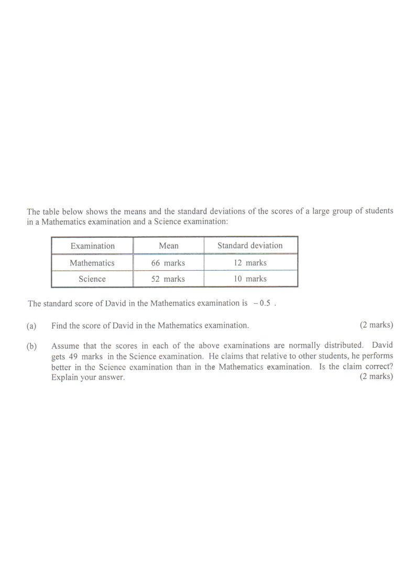

Scroll the solution to highlight each step.
The table below shows the means and the standard deviations of the scores of a large group of students in a Mathematics examination and a Science examination:
| Examination | Mean | Standard deviation |
|---|---|---|
| Mathematics | 66 marks | 12 marks |
| Science | 52 marks | 10 marks |
The standard score of David in the Mathematics examination is $-0.5$.
(a) Find the score of David in the Mathematics examination. [2 marks]
(b) Assume that the scores in each of the above examinations are normally distributed. David gets $49$ marks in the Science examination. He claims that relative to other students, he performs better in the Science examination than in the Mathematics examination. Is the claim correct? Explain your answer. [2 marks]

For a score $x$ with mean $\mu$ and standard deviation $\sigma$, \[z=\frac{x-\mu}{\sigma}.\] Mathematics: $\mu=66$, $\sigma=12$. David’s standard score is $-0.5$.
A negative standard score means David scored below the Mathematics mean.\[\frac{x-66}{12}=-0.5\] \[x-66=(-0.5)(12)\] \[x=66-6=60.\]
David scores $60$ marks in Mathematics (below the mean of $66$).Science: $\mu=52$, $\sigma=10$, and David’s score is $49$. \[z=\frac{49-52}{10}=\frac{-3}{10}=-0.3.\]
Both standard scores are negative, but $-0.3$ is larger than $-0.5$.For Mathematics $z=-0.5$; for Science $z=-0.3$. Since \[-0.3>-0.5,\] David’s result in Science is closer to (i.e. less far below) the mean, relative to the spread of that paper. He therefore performs better in Science than in Mathematics relative to other students.
The larger standard score always indicates the relatively better performance.Answer:
(a) David’s Mathematics score is $60$ marks.
(b) Science standard score $=-0.3>-0.5$ (Mathematics), so the claim is correct — David performs better in the Science examination relative to other students.